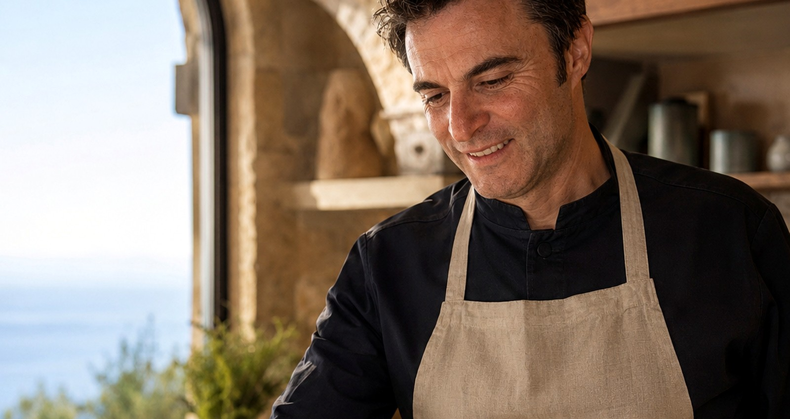
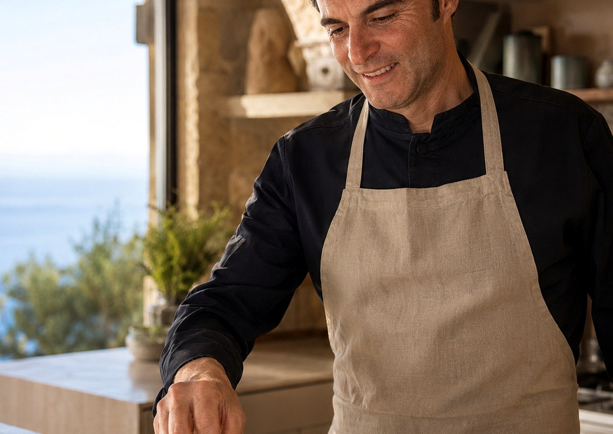

❦
Menú Selección
Desde 65 €Aperitivo, 2 entrantes, principal y postre.

Cocina mediterránea con alma argentina para comidas, cenas y celebraciones privadas.
Desde 65 € por persona.


Soy Mauro Ciccarelli, chef argentino afincado en España. Mi cocina une producto, técnica y cercanía para crear experiencias gastronómicas personalizadas en casas, fincas, villas y eventos privados.
Trabajo desde el sabor y el oficio: pasta fresca, brasa, crudos, pescados, carnes y platos pensados para cada mesa.
El objetivo es que el cliente disfrute de una comida privada con cocina de restaurante, sin perder la naturalidad de una celebración en casa.
Una selección breve: platos principales, pasta fresca, pescado dorado, carne y trabajo de cocina. Sin duplicar la foto de parrilla.




Mi recorrido profesional me ha llevado por cocinas exigentes, servicios de catering y proyectos gastronómicos donde la organización, el producto y el punto de cocción son tan importantes como el plato final.
En Barcelona trabajé en el entorno Arola del Hotel Arts; más tarde dirigí cocina de catering en Le Chef y en Madrid estuve vinculado a HER, una propuesta mediterránea con influencia mexicana.
Primero definimos fecha, número de personas, estilo de menú y posibles alergias. Después preparo una propuesta clara con precio, platos y condiciones de reserva.
El día del evento llego con la mise en place organizada, termino la cocina en tu casa y dejo el área de trabajo ordenada y recogida.
Te enviaré una propuesta personalizada. El email queda pendiente de confirmar antes de publicar.